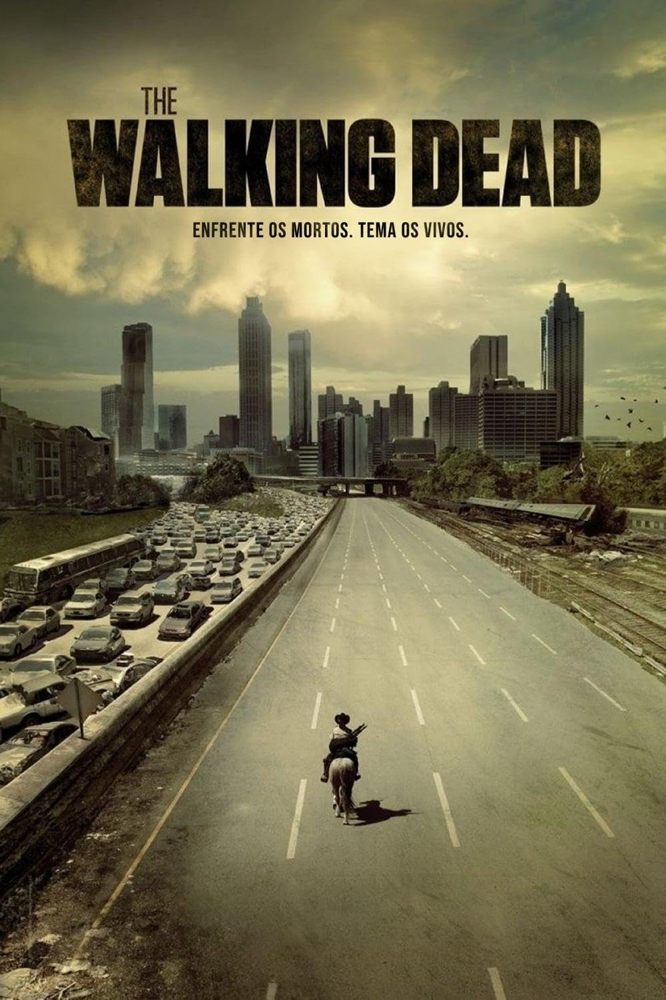

O mundo pós apocalíptico deThe Walking Dead.
Conheça os personagens de TWD
Conheça os personagens de TWD

Equipe
Eles precisam de um líder que saiba liderar bem uma missão, ou de suprimentos ou de furto.
O grupo está acostumado a lidar com zumbis e a caçar comida para matar fome, ou aprimorar habilidade.
Nenhum dos membros fica pra trás, todos se ajudam não importa a ocasião e o lugar.